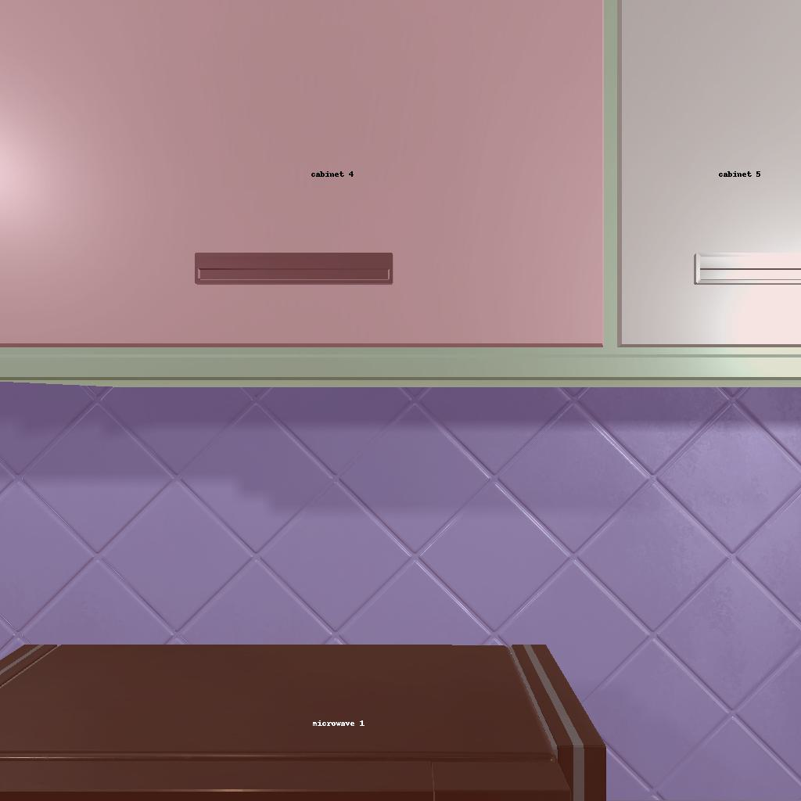

---------------------------------------------------------task: 12---------------------------------------------------------
--------------------------------------------------------------------------------------------------------------------------------------------------------------------
--------------------------------------------------------------------------------------------------------------------------------------------------------------------
Step:--------------------------------------------------------------------------10-------------------------------------------------------------------------------
----------------------------------------
VLM Prompt:
Image1:
Image2:
**Instruction**
1. Analyze the provided image to identify all visible household objects, focusing on those relevant to the task description "clean some tomato and put it in countertop."
2. Use the analysis of the image and the task hint "The agent must find an object of the desired type, pick it up, go to a sink or a basin, clean the object with a sink or basin, and then find the correct location to place it and put it down there. The agent does not need to use soap bottle or faucet to clean the object, and the agent just needs to do action that is "clean the object with the sink or sink basin"." to answer the question: what is the most reasonable action in the choices for the task description "clean some tomato and put it in countertop"?
4. Decide and write the answer using the template: The answer is: (i): , where i is the real number. If there is no desired object in the image, search every place based on **Initial Observation** to find the object. And if no one is exactly correct, choose a similar answer.
**Initial Observation**
You are in the middle of a room. Looking quickly around you, you can see cabinet (1-6), microwave (1), countertop (1-2), coffeemachine (1), toaster (1), sink (1), sinkbasin (1), fridge (1)
**Answer Choices**
(1): go to cabinet 2
(2): go to cabinet 3
(3): go to microwave 1
(4): go to cabinet 5
(5): go to cabinet 6
(6): go to countertop 1
(7): go to coffeemachine 1
(8): go to toaster 1
(9): go to countertop 2
(10): go to sink 1
(11): go to sinkbasin 1
(12): open cabinet 1
(13): close cabinet 1
(14): take nothing from cabinet 1
(15): examine cabinet 1
**Answer**
Let's think step by step by following the instructions.
----------------------------------------
----------------------------------------
Original Response:
First, we need to find a tomato to clean it. Tomatoes are generally kept in a fridge or on a countertop, and since the task specifies "clean some tomato," it is likely not already on the countertop. The fridge has not been mentioned in the images, so we can't access it right now.
Next, we need to clean the tomato, which requires a sink or sink basin. Image 1 shows a countertop but no sink, and Image 2 shows cabinets but no sink or sink basin.
Considering the Initial Observation, we know there is a sink (1) and a sinkbasin (1) in the room. Since we need to clean the tomato, we should go to one of these locations.
After cleaning the tomato, we are instructed to put it on the countertop. However, since we haven't found the tomato yet, our first action should be to locate it.
The most reasonable action would be to first find the tomato, which is not visible in the provided images. Therefore, we should search every place based on the Initial Observation.
The answer is: (1): go to cabinet 2. This is the first cabinet we can investigate to find the tomato before we proceed to clean it at the sink or sinkbasin and then place it on the countertop.
----------------------------------------
----------------------------------------
>>> Refine Original VLM Response and Get Pure Action: go to cabinet 2
----------------------------------------
-----------------------------------------------------------------
Running time: 10.194539546966553 seconds
Total Money: 5.5448499999999985
-----------------------------------------------------------------
-----------------------------------------------------------------
Text Observation:You arrive at loc 1. The cabinet 2 is closed.
-----------------------------------------------------------------
UNSUCCEED